Summary
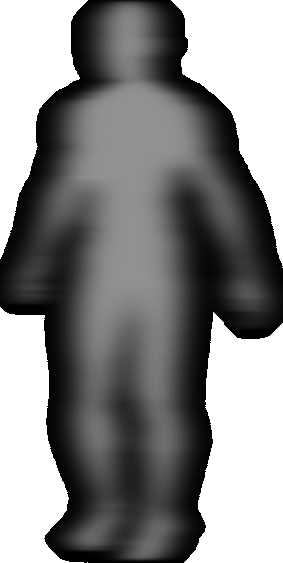
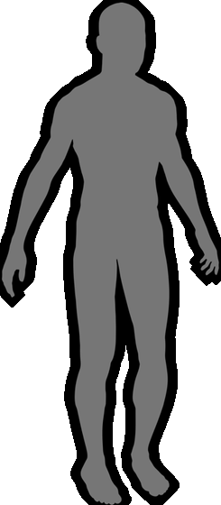
LuminAI is an interactive art installation in which participants canengage in collaborative movement improvisation with an artificiallyintelligent virtual dance partner.
The line between human and non-human is blurred, spurringparticipants to examine their relationship with AI based technologyand how it can be expressive, social, and playful.
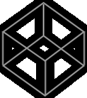
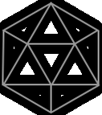
LuminAI’s virtual agent analyzes participant movements through procedural representations of the Viewpoints andLaban’s movement theory (from theater and dance) and improvises responses from transformed memories of pastinteractions with people. In other words, the agent learns how to dance by dancing with us.
Viewpoints
Laban’s
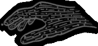
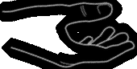
The LuminAI installation ultimately examines how humans and machines can co-create experiences together asequals, but it does so in a lighthearted environment. Participants are able to creatively explore movement whilehaving fun.
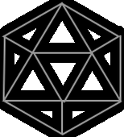
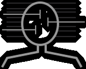
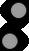
ON-GOING WORK
Engaging with the public in aninformal learning environments,as a way of increasing theunderstanding and awareness ofAI and computational literacy.
Investigating the Laban’smovement theory as a wayfor the agent to understandand reason about movement
Developing a machine learningtoolkit for visualizing how theagent clusters similar gesturestogether as it is learning
Source: https://adamlab.gatech.edu/projects/luminai/
Role
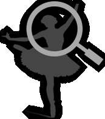
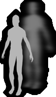
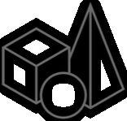
I am a Graduate Research Assistant in Dr. Brian Magerko’s Expressive Machinery Lab, working on the project. I amresponsible for imparting the learnings from Laban’s Movement Analysis to the AI. This includes:
Studying Laban’s MovementTheory to identify keys aspectsof human movement
Researching the variousadaptations of various LMAcomponents
Deriving computationalrepresentation of LMAcomponents being
Adopting the Laban basedcomputational modelsinto AI
Laban's Movement Theory
Rudolf Laban, and later others, developed a method and language to describe, visualize, interpret and documenthuman movement, called Laban Movement Analysis. The method uses a multidisciplinary approach, incorporatingcontributions from anatomy, kinesiology, psychology, Labanotation and many other fields.
Source: Wikipedia
“LMA provides a rich overview of the scope of movement possibilities.These basic elements can be used for generating movement or fordescribing movement. They provide an inroad to understanding movementand for developing movement efficiency and expressiveness. Each humanbeing combines these movement factors in his/her own unique way andorganizes them to create phrases and relationships which reveal personal,artistic, or cultural style.”
Peggy Hackney, Making Connections
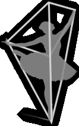
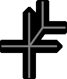
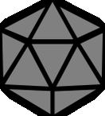
PARADIGMS
Effort
Space
Shape
Body
The way the bodychanges shape duringmovement is furtherexperienced andanalyzed through theShape category.
Describes the bodyparts that are moving,are connected, areinfluenced by others,and general statementabout organization.
Effort describes thedynamic qualities ofmovement. It isintended towardsunderstanding theinner intentionsrelated to a movement
Involves motion inconnection with theenvironment, and withspatial patterns,pathways, and lines ofspatial tension.
Source: Wikipedia
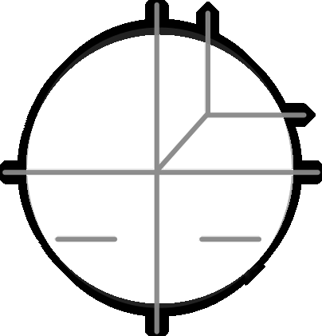
MOVEMENT QUALITIES
Efforts or Movement Qualities in Laban’s theory attempts to describe the dynamic qualities of human movement.These include qualities like how sudden a movement is, or how free a movement is, amongst others. Each of thesequalities are correspond to an inherent attitude, an innate nature. It is this innate nature that Laban tries to manifestthrough these qualities. There are 4 of these movement qualities which, in Laban’s Notation, are represented asfollows:
Weight
Space
Flow
Time
Laban’s notation for efforts
Time
Flow
Weight
Space
How heavy or light
the movement is.
Physiologically, it
relates to how much
energy is exerted in
movement
How free or bound the
movement is.
Physiologically it
relates to muscle
tension during the
movement
How direct or indirect
the movement is. This
relates to how focussed
the attention of a
performer is
How sudden or
sustained the movement
is. This is related to how
jerky the motion is
ATTENTION
INTENTION
DECISION
PRECISION
You attend to an object
You identify the
intention of dealing
with object
You choose, quickly or
slowly, whether to
pursue the decision
You carry out the
intended action with
certain precision
Behind The Curtains
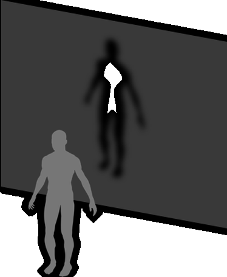
The virtual dance partner manifests itself as a shadow on thescreen in front of participants. This shadow tries to follow themovements of the participant - starting with imitation and thengoing into response mode. In response mode, the agent can doeither do random transformation on the same movement asthe participant, or recall a similar gesture from its memory.
The gesture recall is based on recognition of the current movement by the agent and finding another gesturewith physical similarity or temporal closeness. The agent keeps building and refining its knowledge base based oninteraction with the participant.
ARCHITECTURE
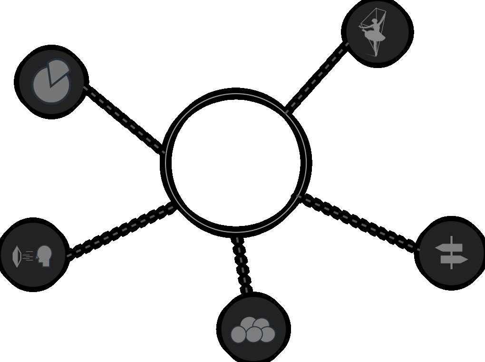
Movement
Theory
Gesture
Segmentation
LuminAI Core
Decision
Making
Visualization
Memory
Next Steps
Currently, we are working on adopting the ‘Time’parameter of Laban’s Efforts into the system. This is doneby capturing joint velocity and acceleration, and usingthese to identify sudden and sustained movements.
The next steps involve adoption of ‘Space’ and ‘Weight’qualities of Effort using multi-modal input like MotionCapture suit, Kinect, EMG Band, Accelerometer etc. Wewill also plan on exploring spacial qualities of dance andmovement using the icosahedron-based kinesphereconcept of shape and space exploration.